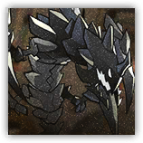

Evolving Monster
Melee Physical; Construct Leader
|
 |
The Mediator's Guardian and Companion. Between persuasion and obedience, it will always choose the latter, believing its master's choice is the only sliver of hope in catastrophe. |
Mon2tr
Huge Construct, Lawful Neutral
| AC 19 | Initiative +4 (14) |
| HP 287 (25d12+125) | |
| Speed 40 ft., fly 40 ft. (hover) | |
| Mod | Save | Mod | Save | Mod | Save | |||||||||
|---|---|---|---|---|---|---|---|---|---|---|---|---|---|---|
| STR | 22 | +6 | +6 | DEX | 18 | +4 | +4 | CON | 21 | +5 | +5 | |||
| INT | 11 | +0 | +0 | WIS | 16 | +3 | +3 | CHA | 18 | +4 | +4 |
| Skills Athletics +10, Perception +8 |
| Immunities Poisoned; Poisoned, Charmed, Frightened, Paralyzed, Petrified, Exhausted |
| Senses Darkvision 120 ft., passive Perception 18 |
| Languages Understands Common but can't speak |
| CR 17 (18,000 XP; PB +6) |
Traits
Non-Damaging Restructuring. When Mon2tr dies, it erupts with a force shockwave. Dexterity Saving Throw: DC 20, each creature within 10 ft. of Mon2tr's Emanation. Failure: 26 (4d12) force damage, and Stunned for 1 minute. The target can retry the DC 20 Constitution saving throw at the end of each of its turns to end this Stunned. Success: Half damage.
Self-magnetism. When Mon2tr is within 60 ft. of Kalt'ist, its AC gains a +5 natural armor bonus (included above), it can magically share its senses with Kalt'ist, and both can communicate telepathically. When Kalt'ist dies, Mon2tr also dies.
Four Claws. Mon2tr can grapple up to four Medium or smaller creatures simultaneously.
Phase Anchor. Mon2tr is immune to forced movement and teleportation effects at its own discretion.
Actions
Multiattack. Mon2tr makes four attacks using either Claw or Eldritch Splash.
Claw. Melee Attack Roll: +12, reach 10 ft. Hit: 26 (6d6+5) piercing damage. If the target is Medium or smaller, it is grappled (Escape DC 20).
Eldritch Splash. Ranged Attack Roll: +10, range 120 ft. Hit: 26 (4d10+4) force damage. Creatures within 5 ft. of the target take the same damage.
Bonus Actions
Help. Mon2tr takes the Help action, but the recipient is limited to Kalt'ist only.